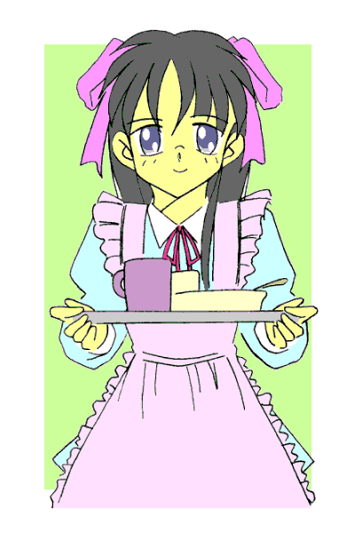
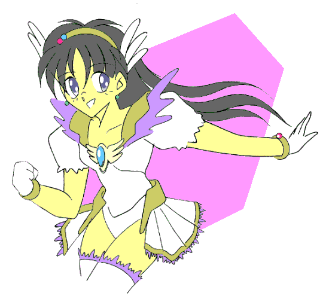
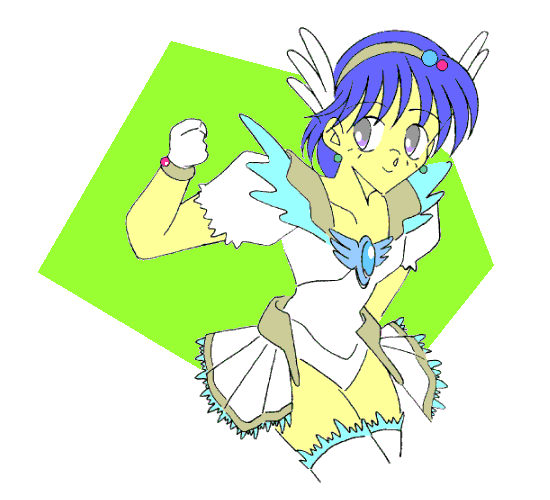
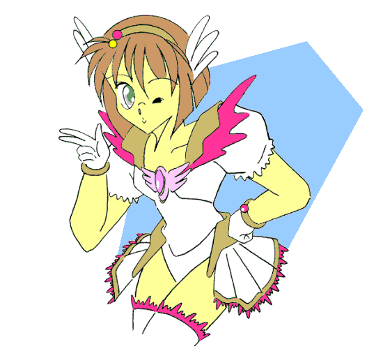

｢真奈美、お醤油取って｣
｢はあい。ママ、お皿はこれでいいかしら？｣
｢いいわね。そこに並べといて……ふふっ、そのエプロン似合ってるわよ｣
｢やだっ、ママったら｣
｢すっかり可愛くなったわね。……少し前までがさつだったのが嘘みたい｣
｢もう……あたしはもう、武士（たけし）という男の子じゃないわ。あたしは三代真奈美（みしろ・まなみ）……れっきとした女の子よ｣
｢そうだったわね、ごめんなさい。
……あの時、あなたが変身したまま男の子に戻れなくなって、ママどうしようかと思ったけど……これも運命だったのね。立派な女の子になってくれて、ママ嬉しいわ｣
｢ありがとうママ。これもママのおかげよ……｣
ガバッ！！！！
｢ハアッ……ハアッ……よ、よかった、ちゃんと男に戻ってる。…………ったく、とんでもない夢を見たぜ……｣
変身美少女戦士ミラージュガール
第三話：登場！（誕生？）真･美少女戦士？
作：ライターマン
俺の名前は三代武士（みしろ･たけし）、１３歳で私立津留木（つるぎ）学園に通う中学二年生。もちろん男……なのだが……
土曜日の朝。学校も休みで、俺も家でのんびりと過ごしたいところだ……が、
｢ブルー、しばらく奴の相手をしてくれ！！ 俺が一気にケリをつける！！｣
｢分かった！！｣
俺ともう一人の仲間は、目の前の異形の生物……邪霊界より襲来した魔獣を相手に戦っていた。
ここ新間（しんま）市では、破壊と混乱を好む邪霊界との｢扉｣がどこかで開き、たびたび魔獣が現われるようになった。
邪霊界とは逆の、平和と秩序を好む精霊界では選ばれた人間に｢戦士｣としての力を与えていたのだが……
今の俺の服装は、光沢のある白い生地で出来た服とミニスカート、そして手袋、ブーツ。頭にはヘアバンドを着け、胸の中心部にはブローチが光っている。
ちなみに、今魔獣と格闘している俺の仲間も、服の色に一部青色が入っているものの、同じデザインのコスチュームを身につけている。
……断っておくが、俺には女装の趣味とか女性への変身願望はないっ！！ あってたまるか！！
しかし魔獣と戦うのは普通の人間のままでは無理であり、｢美少女戦士｣
ミラージュガールに変身しなければならないのだ。
だからと言って、俺が好き好んで変身してると思わないでくれ。
母さんが昔使っていた変身ブローチを触っているうちに、ブローチが誤まって俺をミラージュガールの一人、ミラージュホワイトにしてしまったのだ！！

魔獣と格闘していた俺の仲間、ミラージュブルーは、俺が両腕を交差させて生み出した光の塊を右手に移動させたのを見て、その場を離れた。
そして俺は、手にした光の塊を魔獣たち投げつけた。
｢ライトニングスマッシュ！！｣
光の塊は大きくなりながら魔獣たちを飲み込み、そして奴らは光の中で徐々に形を失い……消えていった。
｢ふうっ……やったね｣
笑顔でそうつぶやくと、俺はブルーに向かって握りこぶしに親指を立てた。
最初に出会ったとき、ブルーは格闘が苦手だった。俺は前にいた町で習っていた武術をブルーに教え、ブルーも今では一人で魔獣と格闘を行なえるようになっていた。
俺がサムズアップをしたのを見て、ブルーも微笑みながら俺にサムズアップを返してきた。その時……
｢……終わったわね。どうやらあたしの出番はなかったか｣
俺たちはその声に振り返る。そこにいたのは俺たちと同じ年頃の女の子だった。
髪を肩の下あたりで切り揃えて、ピンク色のワンピースを着た彼女は手を腰に当て、俺たちに向かって微笑んでいた。
はっきり言って、俺好みの美少女だった。
俺は、彼女が言った言葉の意味を確かめようと、尋ねた。｢……君、さっき『あたしの出番』って言ってたよね。それってもしかして……｣
｢そう、あたしもミラージュガールの一人……ミラージュレッドよ｣
｢ミラージュレッド……赤き炎の戦士｣
｢そうよ。で、あなたたちがミラージュホワイト、そしてブルーね。話はともかく変身を解除したら？ タイムリミットが近づいてるわよ｣
その言葉に、俺たちはそれぞれの腕のブレスレットに付いている石を見た。石は赤色になっており、かなり早い間隔で点滅していた。
ミラージュガールに変身した俺たちがその力が使えるのは約１０分間。タイムリミットが近づくと、ブレスレットの石が青から赤になり点滅を始める。
もしタイムリミットを過ぎても変身を解除しなかったら……そのときは変身前に着ていた服は元に戻らず、変身コスチュームのまま力を失うことになる。はっきり言って、俺は戦闘以外でこのコスチューム姿を人前にさらしたくない。ブルーの方はなおさらだろう。
あまり他人の見ている前で変身を解除したくはない。だけど、同じミラージュガールということもあって、俺たちは彼女の前で変身解除のためのキーワードを唱えた
｢｢ディスチャージ｣｣
俺たちの身を包んでいた変身コスチュームが光の粒子に変換し、変身前の服装に戻る。
ブルーこと古木祐一（ふるき･ゆういち）は、変身解除とともに身体も男のそれに戻った。しかし俺の方の身体は、相変わらず女の子のままだった。
古木と違って、俺の場合は変身解除後も変身のための｢強制力｣の影響が残っており……あと約１０時間、女の子の身体のままで過ごさなければならないのだ。
なんで俺だけが……と思うのだが、本来男の子がミラージュガールに変身できること自体が異例なことなのだそうで、詳しいことも分からないし、どうしようもないらしい。
そして女の子は、古木が男の子に戻ったのを見て、少し驚いた表情をした。
｢あなた男の子だったの？ 変身を続けても大丈夫？ それとももう覚悟は出来てるのかしら？｣
｢え？ 覚悟って？｣
｢知らないの？ 男の子がミラージュガールに変身していると、そのうち変身を解除してもしばらく女の子の状態が続くようになるのよ｣
彼女の言葉に俺たちは顔を見合わせた。そして彼女は言葉を続けた。
｢そしてさらに変身を続けたら……｣
｢｢続けたら？｣｣
｢ある日を境にして男の子に戻れなくなる。つまり正真正銘の女の子になるのよ｣
｢ま、まさか！？ 本当に？｣
｢本当よ。なぜならあたしも本来は男の子だったから｣
｢｢ええっ！？｣｣
俺たちは同時に驚きの叫びをあげた。まさか……そんな……
｢そして今はこのとおり……ふふふ、信じてくれるかしら？ この話……｣
その内容に衝撃を受けた俺たちは、笑いながらスカートをふわりとなびかせて去っていく彼女を呆然と見送るしかなかった。
そして俺の脳裏には、先日見た悪夢の内容が鮮烈によみがえっていた……
｢そうですか……そんなことが……｣
女の子が去ったあと、しばらくして戻ってきたペルティノことペルは、俺たちの話を聞いてつぶやくようにそう言った。
ペルは精霊界から来た妖精で、サイズの小さな動物になら何にでも変身することができる。今は子犬の姿で、俺たちの横にちょこんと座っている。
｢……で、どうなんだ？ そ、その……本当に女の子になったまま……男に戻れなくなるなんてことが……｣
尋ねる俺の声は少し震えていた。
もし彼女の言うとおりだとすれば、まだ兆候のない古木はしばらく大丈夫だとしても、俺には｢その日｣が突然来る可能性があるのだ。
女の子になったまま、男に戻れなくなる日が……
｢分かりません……ですが、可能性は低いと思います｣
｢本当か！？｣
｢はい、もし変身を続けることで男に戻れなくなるとすれば、他にもいろいろ変化があるはずです。例えば変身解除後の、女の子でいる時間が長くなるとか……どうです？｣
ペルの問いに、俺は大きく首を横に振った。
分単位で計ったことはないし、寝ている間にいつの間にか戻ってることも多いけど……変身解除後に男に戻るのは、毎回ほぼ１０時間後だった。
｢……ですよね。その女の子も、本当に昔は男だったかどうかもはっきりしないし、それほど深刻になる必要もないと思います｣
｢じゃあ何で……｣
あんなことを言ったんだ？
｢からかわれたんじゃないですか？ 男の子がミラージュガールになってるもんだから、ちょっと脅かしてやれっ……てね｣
｢……なあんだ、そういうことか｣
俺は胸をホッとなでおろした。
｢じゃあ、私は武士さんの家に戻ります。……休みだからって、あまり遊びすぎないでくださいよ｣
そう言うと、ペルは子犬から鳩に変身して空の向こうに飛んでいった。
ペルを見送った後、俺はう〜んと背伸びをすると、ポケットから取り出したリボンで髪を結びながら古木に話しかけた。
｢さあて、どうする？ いつものようにどこかでなんか食っていくか？｣
最初に出合ったとき、変身を解除した直後の俺を見た古木は、女の子の姿の俺にほのかに恋心を抱いたらしい（それも初恋だったようだ）。
それが実は男だった！！ と知って、古木はかなりのショックを受けてしまった。
俺は古木を慰めるために、魔物退治で母さんからもらった報酬（小遣い）で喫茶店やゲームセンターに彼を誘うようになり、いつしかそれは魔物退治のあとの恒例になっていた（毎日だと金が続かないからな……）。
しかし、古木は俺の誘いには答えずに、逆に尋ねてきた。
｢それはともかく……今日は着替えなくてもいいの？｣
｢へへっ、今日は休みだからな。男が着ても女の子が着てもおかしくない服を着てきたのさ｣
そう言って、俺は両腕を広げてくるりと回った。
いつもは学校の帰りに変身していたので、変身を解除すると男子学生服を着たまま女の子になってしまい、俺はいつも女の子の服に着替えなきゃならなかった。
だけど今日は学校が休みなので、男女兼用の服装で出てきたのだ。
今の俺の服装は、紺のスラックスにポロシャツという格好で、伸びやすい生地のものを選んだから、多少胸と腰はきついが見た目は問題ないはずだった。
｢ふーん、なるほど。よく考えたね……うっ！！ み、三代君！！ や、やっぱり…そ、その格好は…ま、まずいと思う！！｣
最初は感心していた古木だったが、突然顔を真っ赤にしてそっぽを向いた。
｢へ？ これのどこがまずいんだ？｣
｢む、胸の……先の方……｣
そう指摘されて、俺は自分の胸元を見て……そして気がついた。胸の二つの膨らみ……その先端に、さらに別の小さな｢膨らみ｣があることを……
｢うわわっ！！ み、見るなあぁぁぁ――っ！！｣
俺は顔を真っ赤にして両腕で胸を覆い隠し、絶叫した。
｢……くっそー、やっぱりどこも開いていないか｣
俺たちは魔獣と戦った場所の近くにあるショッピングモールで、下着を売ってそうな場所を探した。だが、まだ早い時間だったのでどの店も閉まったままだった。
俺は古木の後ろを、ほとんどくっつきそうな感じで歩いていた。他の人に俺の胸を見られないためには仕方ないのだが、前の方が全然見えない。
｢うーん、そうだね…………あっ！｣
俺の代わりに前の方を探していた古木は突然立ち止まると、少し前の方の店を指差した。
そこは一軒のブティックだった。若い女性向けの店らしく、ガラスの向こうには中学生や高校生あたりが好みそうなワンピースやミニスカートを着たマネキンが立っている。
｢こういうところでもいいかもしれないな。……あ、でもまだ開店してないじゃないか｣
｢い……いや、そうじゃなくって、左から２番目の人形が着ている服……｣
｢えっ？ あ、あれは……！？｣
その人形が着ていた服は、上着とミニスカートの組み合わせだった。
赤系の色を使い、胸の中心部にはブローチの代わりにリボンを付けて全体的にシンプルなデザインだったが……それはミラージュガールのコスチュームとそっくりだった。
しかも店の名前を見ると、｢Ｍｉｒａｇｅ｣……つまり「ミラージュ」。
｢どうする、三代君？｣
｢どうする……って言われても、ここまで似ているならミラージュガールと何かの関わりがあるんじゃないか？ この際開店前だけど、中に入れてもらって話を聞こう｣
｢……うん｣
俺たちは頷き合うと、店のドアに手をかけた。
店の中にいたのは、俺の母さんと同じくらいの年の女の人だった。
｢ごめんなさい。開店までもう少しだから待ってくれる？｣
｢すいません。実はちょっと聞きたいことがあって……｣
店の名前のことを尋ねようとしたのだけど、その女の人はいきなり俺の肩をガシッと掴んだ。
｢ちょっとあなたノーブラじゃないっ！！ ……ダメよ。女の子はもっと胸を大事にしなきゃっ！！ ちょっとこっちに来なさいっ！！｣
そう言うと、女の人は俺の手を引っ張って、店の奥の方へと連れていった。
｢……さ、この中から選びなさい。あなた、自分のサイズは分かる？｣
そこは下着類のコーナーだった。
いろんなデザインのショーツやブラジャーが飾られており、中には赤や黒などの派手な物や、レース編みの飾りがついた物などがあった。
こんなところに入ったことのない俺は、すっかりうろたえてしまい、
｢さ、さ、サイズって？｣
｢あら、サイズが分からないの？ じゃあ今から測ってあげるわ｣
｢え！？ ちょ……ちょっと！？｣
必死の抵抗も空しく、俺は上半身裸にされて、胸にメジャーをあてられた。
｢……ただいまあ｣
俺が家に帰り着いたのは、その日の夕方６時ごろだった。
｢あらお帰りなさい…………どうしたのその格好？｣
帰ってきた俺の姿を見て、母さんは少し驚いたようだったけど……それはそうだろう。
今、俺が着ているのは、白のブラウスとチェック柄のエプロンドレス。朝、俺が着ていた服でもなく、母さんが買ってきた服でもなかったんだから。
俺はくだんのブティックでの出来事を、母さんに話した。
｢……それでその女の人が、下着だけでなくいろんな服を俺に着せ始めたから、慌てて逃げ出しちゃってさ。話を聞くどころじゃなかったんだよ｣
｢ふふふ、それは災難だったわね。……そういえば服の代金はどうしたの？｣
｢『今度来た時でいいから』って言われたんだ。けどこっちも聞きたいことがあるしね。明日の日曜日にまた行くつもりだよ｣
｢そう、分かったわ。ところでその服もうしばらく着たままにしない？ もうすぐお父さんが帰ってくるから見てもらいましょうよ｣
｢いやだっ！！ そろそろ変身してから１０時間だよ。この格好で男に戻りたくはないっ！！｣
｢それは残念｣
｢ところでデートの方はどうだったの？｣
服を着替えるために部屋へ戻ろうとした俺だったが、母さんの言葉に驚いて振り返った。
｢で……デートぉ！？｣
｢そうよ、さっきまで古木君と二人っきりだったんでしょう？｣
｢冗談じゃないっ！！ 確かに今日はあいつと新作映画を見て、喫茶店でチョコレートパフェ食って……公園を歩きながらいろいろ話をしてたけど、別にデートじゃないぜっ！！｣
｢立派にデートのような気がするけど……｣
｢絶対違うっ！！ 男とデートなんかするもんか！！ 俺は男だ！！｣
俺はそう叫んで、自分の部屋へ駆け込んだ。
後で聞いた話だけど、俺が部屋に戻ったあと、母さんはこう呟いたらしい。
｢やれやれ……あの喋り方は完全に男の子ね。最近、雰囲気や仕草が女の子に近付いているような気もしたけど、気のせいか……｣
翌日の日曜日、俺は母さんを案内して問題の店の前に立っていた。
｢なるほど、ここがそのブティックね。確かにあの服……似ているわ｣
｢だろ？ 母さん｣
昨日と同じで店は開店前だったけど、母さんは構わず中へ入っていき、俺もあとに続いた。
｢すいません。まだ開店前なので…………って、あれ？ ……あ、もしかして初枝？｣
店の奥から現われた女の人は、母さんの顔を見て少し考えるような顔をしたあと、驚いた表情を浮かべて名前を呼んだ。
｢そうよ。久しぶりね弥生。……今は礼戸（れいと）って姓だっけ？｣
｢ええ、そのとおりよ。でも、よくここが分かったわね｣
｢娘に聞いたのよ。昔あたしたちが着ていたコスチュームと似た服を飾ってある、『ミラージュ』という店があるって｣
本当は｢息子｣なんだけど……多分最初からそれを言うと話が進まないと思ったのだろう。母さんはその部分をごまかして、弥生という女の人にそう説明した。
｢……娘って？｣
｢あなたがこれを着せた子よ｣
そう言って母さんが渡した紙袋には、昨日俺が着せられた服が入っていた。それを見た弥生さんは納得したように頷いた。
｢ああ、昨日のあの女の子ね。……確かにあの子なら美少女戦士にふさわしいわ。それにひきかえ今のミラージュレッドは……｣
｢今のミラージュレッドに何か問題があるの？｣
｢大ありよぉ！ 今のミラージュレッドは、私の息子なんだからっ｣
｢｢息子ぉ！？｣｣
｢そうよ信じられる？ しかも……｣
驚く俺たちの言葉に、弥生さんは嘆きながら話を続けようとしていたけど、俺はその話を最後まで聞くことができずに店を飛び出した。
｢ちょっと君！！ どうしたの？｣
弥生さんが店のドアから声をかけたが、俺は振り向きもせずに走ってその場を離れた。
やっぱりミラージュレッドを名乗ってた女の子は元男だったんだ！！ 変身し続けていると男に戻れなくなるというのは本当だったんだ！！
｢……三代君！！｣
走っていた俺を呼び止める声がしたので振り返ってみると、そこには古木と、猫に変身したペルがいた。
｢どうしたんですか？ 武士さん。……捜してたんですよ｣
｢……捜してた？ 俺を？｣
｢はい、この近くに魔物の気配があるんです。それもかなり強力で、複数いる可能性があります｣
｢何だって！？｣
｢ですから武士さんとミラージュレッドを名乗っている方を探して、協力してもらおうと思ってたんです｣
｢そうか……ミラージュレッドと言っていた女の子は、昨日入った店の女の人の子供だそうだ。……だけど……俺は…………行きたくない！！｣
｢三代君！？｣｢武士さん！？｣
驚く古木とペルに、俺はさっき店で聞いた話をした。
｢あの女の子が……弥生という人の息子…………つまり男だった？｣
｢ああ、だから俺もいつかそうなるかもしれないんだ。変身して女の子になったまま男に戻れなくなる日が……それはもしかしたら、今度変身したときかもしれない……｣
｢…………｣
｢そう思うと……恐いんだ｣
｢三代君…………分かった、今回は僕一人で何とかするよ｣
｢古木さん！？｣
｢僕ならすぐに男に戻れなくなる……ということはないだろうから。今まで三代君には何度も助けられたし、戦い方も教えてもらったからね。だから今回は僕が三代君を助ける番だよ｣
古木はそう言って微笑むと、ペルを促して走り出した。

「…………」
俺は、古木とペルが走り去った方角をじっと見つめたまま動けなかった。
俺が教えたおかげで古木……ブルーも何とか格闘戦をこなせるようにはなったけど、二対一でははっきり言って分が悪い。
俺は激しく迷っていた。
(今度変身すると、もう男に戻れないかもしれない……でも古木一人では勝てないかもしれない。……いや、勝てないだけならまだしも、怪我をしたりとか、ひょっとしたら死んでしまうかも…………あいつが……死ぬ？)
ドクン！！
突然俺の脳裏に古木の笑顔が浮かび、心臓が高鳴り始めた。
(え！？ 何だ？ 何で俺の心臓がこんなにドキドキしてるんだ？ こらっ、静まれっ！！ 今はこんなことしてる場合じゃないんだぞっ！！)
俺は必死で鼓動を抑えようとしたのだけれど、どうしてもそれを止めることができなかった。
ドクン…ドクン…ドクン…ドクン………… ブチッ！！
そして、ついに俺の理性が…………キレた。
｢えーい、起きるかどうかも分からんことに悩んでも結論なんか出るもんかっ！！
当たって砕けろ出たとこ勝負！！
男に戻れなければ、古木に責任を取ってもらえばいいんだからもうどうにでもなれええっ！！｣
俺は支離滅裂なことを叫ぶと、古木を追って走り出した。
全力で走った俺だったが、現場についたときには既に戦いが始まっていた。
｢くそっ！！ 三対一かよ！！｣
俺の目の前で、ミラージュブルー一人を三匹の魔獣が取り囲んでいた。
ポケットからブローチを取り出した俺は精神を集中し、変身のキーワードを唱えた。
｢ミラージュマジック ･ ミラクルチャージ！！｣
するとブローチが光り出し、続いて俺の衣服が光の粒子に変わっていく。
光の粒子は俺の周りを回り出し、裸の状態の俺は光に包まれた。
光に包まれた俺の身体が徐々に変化していく。
髪がサラサラになって長くなり、腰のあたりまで伸びていく。
肌が白くなり、指や腕、それに足がスラリと細くなっていく。
腰の部分が大きくなり、逆にウエストの部分が細く括れていく。
そして胸の部分が少しずつ膨らみ、やがて二つの丸い塊になる。
身体の変化が終わると、俺を囲んでいた光の粒子が集まり始める。やがてそれらは光沢のある白い生地で出来た服とミニスカート、手袋、ブーツ、ヘアバンドになって俺の身体を包み、そしてブローチが胸の中心に固定された。
変身が完了した俺は、すぐに飛び出すと魔獣の一匹にパンチを叩き込んでからブルーの横に立った。
｢大丈夫か？｣
｢う、うん大丈夫。で、でも……｣
心配そうに俺を見るブルーに、俺は肩をすくめながら笑って見せた。
｢どうせ後悔するならやるべきことをやってから後悔することにしたのさ。……このままじゃ俺、男でなくなる前に人間でなくなっちまう｣
｢ホワイト……分かった！！｣
俺たちは頷くと背中合わせになり、魔獣たちと向かい合った。
状況はまだ俺たちに不利だったけど、何とか隙を見つけて……と思っていたその時、
｢苦戦しているようね。あたしも手伝うわ｣
その声とともに木の影から現われたのは、昨日会ったあの女の子の顔、そして身に着けているのは俺たちと同じデザインの赤いコスチュームだった。
｢邪なる意志で災いをなす悪しき者どもよ。このミラージュレッドがいる限り、お前たちの居場所はこの世界に存在しません。大人しく自分の世界に帰るか、それとも華麗なる赤き炎でその身を焼き尽くされるか、好きな方を選びなさい！！｣

ミラージュレッドの登場に、魔獣たちは一瞬注意をそちらの方に向けた。
俺とブルーはその隙を逃さず近くにいた魔族に飛びかかった。
残る一体が仲間の魔獣を助けようとしたが、
｢お前の相手はこのあたしよっ｣
そう叫んでレッドが間に入り、これを阻んだ。
俺は蹴り技で魔獣を蹴り飛ばし、ブルーは投げ技で相手を地面に叩きつけ、それぞれの必殺技を放った。
｢ライトニングスマッシュ！！｣
｢アクアストーム！！｣
光と、そして水に包まれて魔獣たちは消滅していった。
そして、レッドは腕を前に伸ばした状態で両手首を重ね合わせ、手のひらを残る一匹の魔獣に向けた。
｢フレイムトルネード！！｣
次の瞬間、魔獣の足元から炎が上がり、竜巻になって魔獣を包み込んだ。
やがて全てを焼き尽くしたのか炎が弱まり竜巻が消えたとき…………魔獣の姿はどこにもなかった。
｢｢｢ディスチャージ｣｣｣
戦いが終わって、俺たちは変身を解除した。（今日は下に少し厚めのタンクトップを着ているから、胸元は大丈夫だ……と思う）
俺と古木……そしてレッドがいた場所には、やはりあの女の子が立っていた。
｢……なかなかやるじゃない、二人とも｣
そう言って、彼女は俺たちに握手を求めてきた。
俺は彼女の手を握りながら尋ねた。
｢ミラージュレッド……君は、ブティック『Ｍｉｒａｇｅ』の『息子』なのか？｣
｢そうよ｣
返事はあっさりと返ってきた。俺はため息をつきながらつぶやいた。
｢そうか…………そして今は正真正銘の女の子……か｣
この先変身を続けていれば、俺もいつかこのように、いやひょっとしたら既にそうなっているのかも……と思い、俺は表情を暗くした。
……だが、
｢違うわよ！！｣
その声に振り向くと、そこには俺の母さんと弥生さん……つまりレッドのお母さんがいた。
｢一明（かずあき）っ！！ あんたこの子たちをからかって遊んでたでしょう！？｣
そう言って弥生さんがゲンコツで小突くと、レッドが抗議の声を上げた。
｢女の子を殴るなんてひどいわ。それにからかったのは、そっちの男の子の方だけよ｣
｢うるさい！！ 大体あんた今は男の身体のくせに、勝手に店の服を持ち出して女の子の格好をしてるなんてどういうつもりっ！？｣
弥生さんのその言葉に、俺の頭の中は一瞬スパークした。
｢…………へっ？ ……や、弥生さん……い、今この女の子が『男の身体』って……｣
｢こいつが女の子の身体なのは変身してるときだけ。その他は変身前も後も男の身体なの。……ただ、こいつは時々女の子の服を着て女装する変態なのよ｣
｢ひどいわ。あたしはただ、服を男女の区別なく平等に着てるだけよ｣
｢……ならその言葉使いは何？｣
｢雰囲気の問題よ｣
目の前で繰り広げられる母娘（実際には息子だが）の会話に、俺の頭は完全にパニックを起こしていた。
｢……じ、じゃあもしかして、『変身を続けるとそのうち男に戻れなくなる』……と言うのは？｣
｢う、そ。……てへっ♪｣
そう言ってレッド、いや礼戸一明（れいと･かずあき）はペロッと舌を出した。
そ、そんな…………目の前にいる、どう見ても美少女にしか見えない女の子が、正真正銘の男だなんて……
それにこいつの言うことに翻弄されて無茶苦茶に悩んだ、俺の立場は一体？
｢さ…さ…詐欺だあああぁぁぁぁぁ――――っ！！｣
あまりのことに目に涙を浮かべ、空を見上げて絶叫した俺の叫びがあたり一帯にこだました。
（おわり）
おことわり
この物語はフィクションです。劇中に出てくる人物、団体は全て架空の物で実在の物とは何の関係もありません。
あとがき
どうも、ライターマンです。
お待たせしましたミラージュガール第三話、これでミラージュガールも勢ぞろい！！ ってこんな連中を「美少女戦士」と言っていいんだろうか？
今頃パソコンの向こうで思いっきり脱力したり激怒してる人とかいたりして……(^_^;)
ちなみにレッドである礼戸一明（れいと･かずあき）は、しょっちゅう女装してるんじゃなく、学校行くときとか普段の生活ではちゃんと男してます。（笑）
出来れば次回あたりにこいつらの夏休みを書きたいんだけど、それまでにもしかしたら夏が終わってるかも知れんな、などと心配している作者でした。
それではまた。
□ 感想はこちらに □